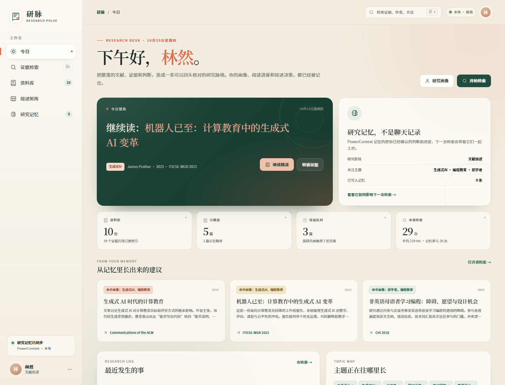
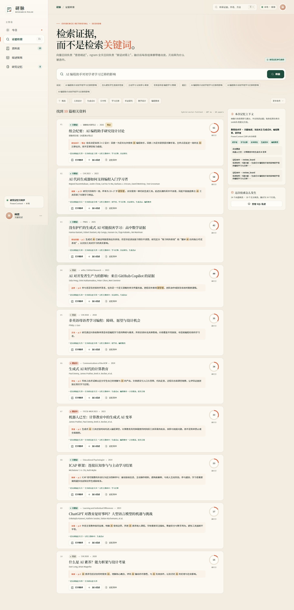
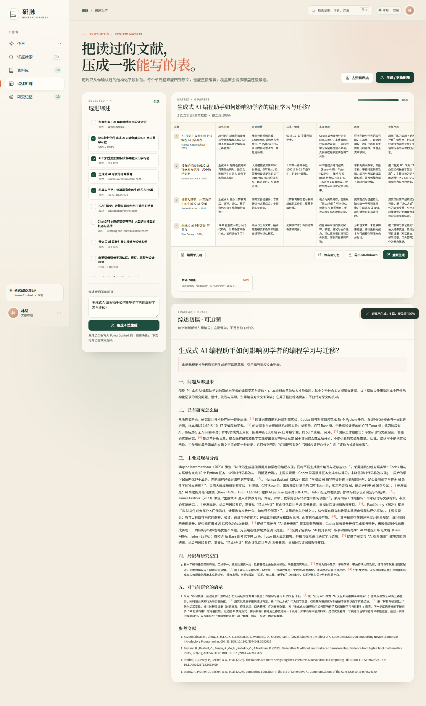
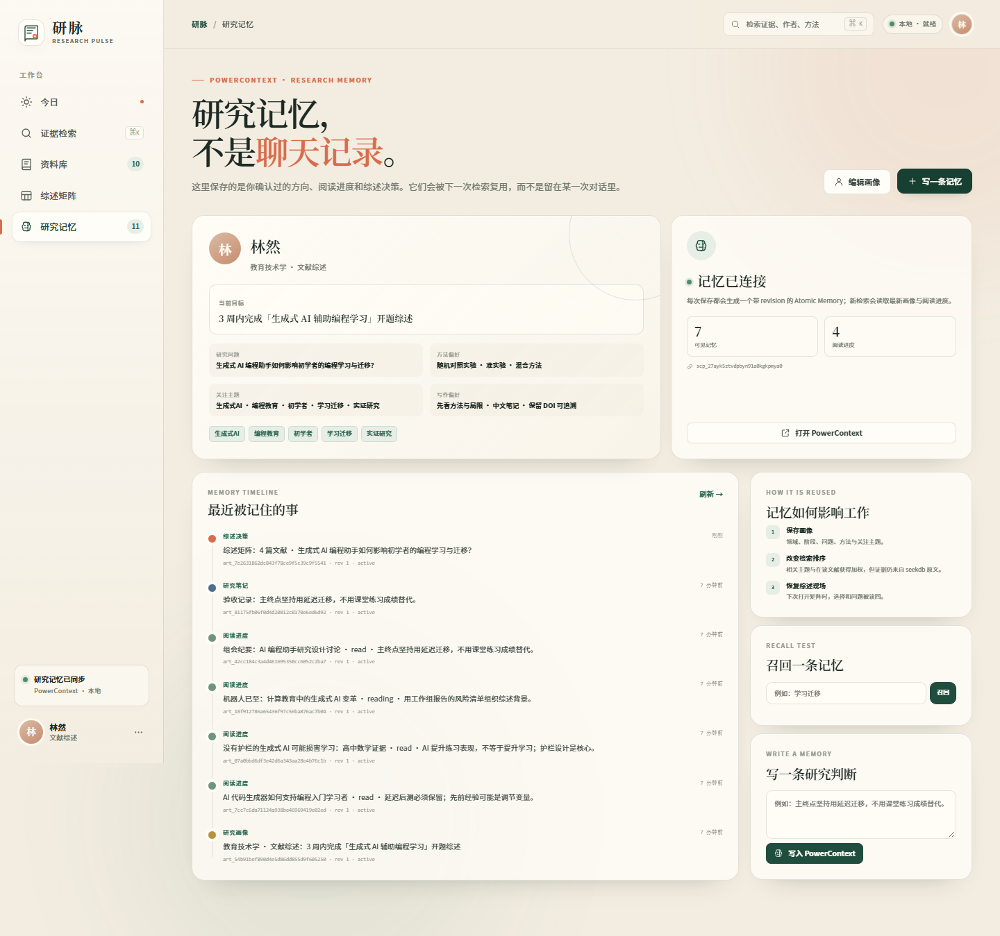
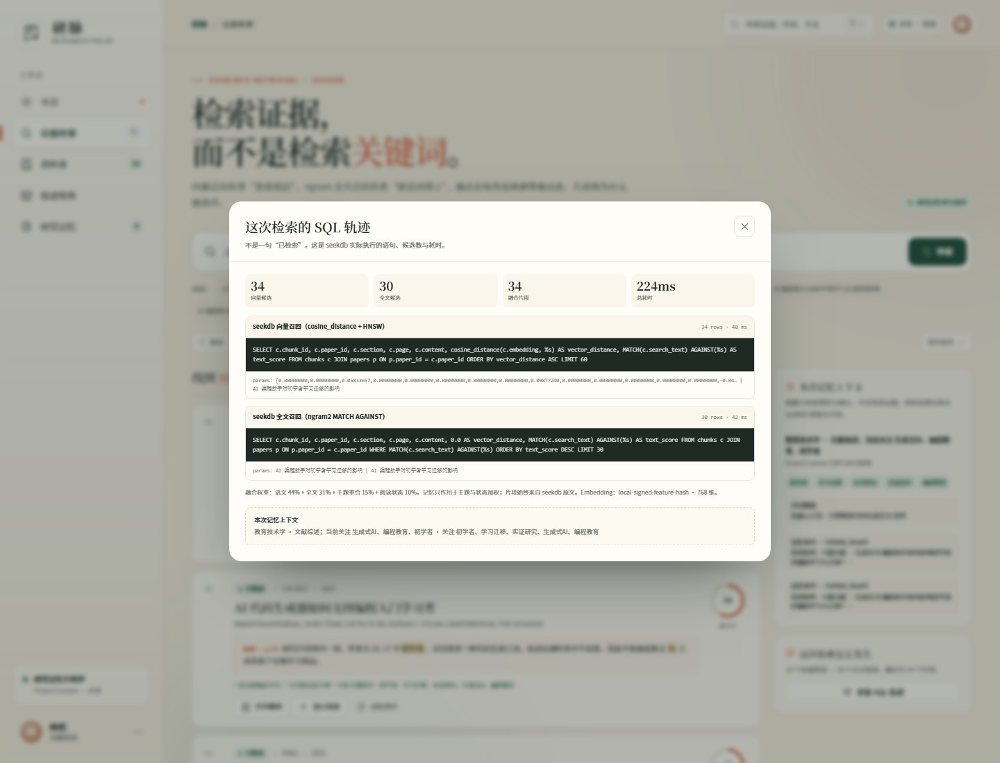

“那句话在哪一页？”
关键词搜不到近义表达，语义检索又可能给出没有出处的流畅句子。综述写作最怕“好像看过”。
证据需要出处
读过的论文、记下的判断、写过的综述，不该散落在聊天记录和十几个 PDF 里。研脉把资料库、混合检索、证据矩阵和研究记忆，连成一条可以回头核对的路径。

研究者真正花时间的，往往不是阅读本身，而是把读过的内容重新组织成可写、可查、可复用的证据。
关键词搜不到近义表达，语义检索又可能给出没有出处的流畅句子。综述写作最怕“好像看过”。
研究问题、方法、样本、发现、局限散落在不同笔记里，每写一次综述就重新复制粘贴一次。
换一个会话，研究方向、阅读进度、上次为什么排除某篇，全部要重新讲一遍。
录屏来自真实运行：检索、SQL 轨迹、原文片段、综述矩阵、研究记忆召回。没有剪辑成“概念动画”。
向量与全文两路召回，结果带分数、理由和原文片段。
点开 SQL 轨迹与章节页码，能看到 seekdb 实际执行了什么。
把选中文献压成 6 维矩阵，生成带引用编号的草稿。
画像、进度、综述选择写入 PowerContext，下次直接恢复。
不是又一个 PDF 聊天框。研脉围绕综述真正要交付的东西组织：证据、矩阵、草稿、可复用的研究上下文。
向量召回负责“意思相近”，ngram 全文召回负责“原话对得上”。融合后按论文聚合，最多展示两个证据片段，不拿同一段话刷屏。

研究问题、设计、样本、发现、局限、可复用点——六个维度从资料中抽取，覆盖率与缺口直接标出来。每个单元格都能改，草稿只使用你确认过的字段。

PowerContext 里保存的不是聊天记录，而是研究画像、阅读进度、综述选择和一句句“为什么”。下一次检索，主题重合与阅读状态会参与排序；打开矩阵，上次的选择还在。

每个结果都能打开现场：两条 SQL、候选数量、融合权重、记忆上下文。评审不需要相信文案，可以直接核对。

SELECT c.chunk_id, c.content,
cosine_distance(c.embedding, :query_vec) AS vector_distance,
MATCH(c.search_text) AGAINST (:query) AS text_score
FROM chunks c JOIN papers p ON p.paper_id = c.paper_id
ORDER BY vector_distance ASC
LIMIT 60;{
"kind": "reading_progress",
"text": {
"paper_id": "kazemitabaar2023",
"status": "read",
"takeaway": "延迟后测必须保留"
},
"artifact_id": "art_...",
"revision": 1
}记忆只进入后两项。片段永远来自 seekdb 原文，排序解释在每条结果下方可见。
一个负责“有哪些证据”，一个负责“这个研究者是谁、读到哪里、上次为什么这样选”。两者不互相替代。
今日 / 检索 / 资料库 / 矩阵 / 记忆
Vanilla JS · 无构建步骤检索融合 · 综述生成 · 记忆编排
Python 3.12 · 127.0.0.1:7860papers / chunks / notes
VECTOR(768) + ngram2 FULLTEXTScope / Atomic Memory
画像 · 进度 · 综述决策普通 RAG 只回答“这一段像不像”。研脉还要回答“这段在哪篇、哪一节、为什么被选中、和你的研究问题有什么关系”。所以检索、记忆、矩阵、引用是同一个数据闭环，而不是四个拼在一起的 demo。
自动验收覆盖双路召回、SQL 轨迹、矩阵、引用、记忆写入与召回。浏览器路径另测 5 条，console 无错误。
自动验收通过
[OK] seekdb 可连接
[OK] 执行向量与全文两条 SQL
[OK] 矩阵包含 6 个维度
[OK] 草稿带 4 条引用
[OK] 综述决策写入 PowerContext
[OK] PowerContext 可召回刚写入的记忆
PASS: 23 checks关于使用效果：当前数据来自开发自测（自动验收、检索日志、浏览器录屏），不是外部用户调研。我们不把自测包装成“真实用户提效”。如果你愿意试用，欢迎按运行说明启动后反馈；后续可用访问统计与使用日志补充。
需要 Python 3.10+、seekdb 1.4（2881）与 PowerContext 1.4.1（8765）。完整命令、重置与排错见 RUNBOOK。
seekdb 2881 · PowerContext 8765
10 份资料 / 34 个片段 / 初始记忆
127.0.0.1:7860 · 无需登录
# 1. Python 依赖
python -m venv .venv
.\.venv\Scripts\python.exe -m pip install -r requirements.txt
# 2. 初始化 seekdb + 研究记忆
Copy-Item .env.example .env
.\.venv\Scripts\python.exe scripts\init_db.py --reset
# 3. 启动
.\.venv\Scripts\python.exe -m uvicorn app.main:app `
--host 127.0.0.1 --port 7860
→ http://127.0.0.1:7860